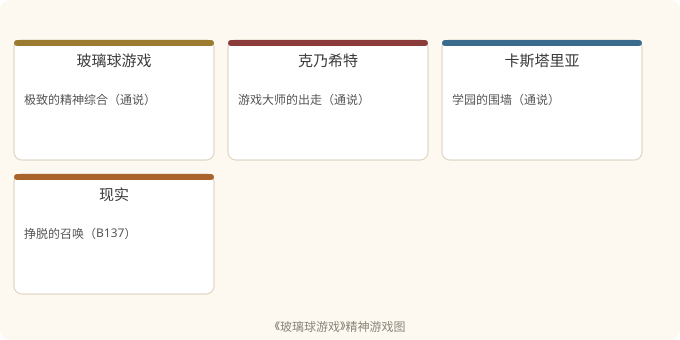

玻璃球游戏
一、基本信息
| 作者 | 黑塞 |
|---|---|
| 成书/出版 | 1943年（Britannica B137：玻璃球游戏 (1943)） Hermann Hesse — Encyclopaedia Britannica（百科全书） |
| 国别/地区 | 德国 |
| 时代 | 近代 · 20世纪40年代 |
| 体裁 | 长篇小说 |
| 语言 | 德语 |

《玻璃球游戏》精神游戏图（主题·结构图）
二、创作背景
Britannica（B137）：《玻璃球游戏》(1943)——Britannica 列举。
Britannica（B137）：黑塞1946诺奖；主题——'个人挣脱既定文明寻找精神自我'。
Britannica（B137）：1960s-70s 英语青年崇拜。
三、内容脉络
（通说待核——B137未载剧情）卡斯塔里亚学园与'玻璃球游戏'的极致精神游戏。
（通说待核）克乃希特的出走：精神游戏与现实的和解。
四、主要人物表
| 人物 | 身份 | 说明 |
|---|---|---|
| 克乃希特 | 游戏大师 | （通说待核，B137未载） |
| 约瑟夫 | 音乐导师 | （通说待核，B137未载） |
五、主题与艺术特点
- '个人挣脱既定文明寻找精神自我'（B137）。
- 精神游戏与责任的冲突（通说待核）。
- 音乐与数学的综合（书名语境——通说待核）。
六、影响与评论
- Britannica：1946诺贝尔文学奖（B137）。
Hermann Hesse — Encyclopaedia Britannica（百科全书） - Britannica：1960s-70s 英语青年崇拜（B137）。
Hermann Hesse — Encyclopaedia Britannica（百科全书）
七、阅读建议
难点
- 虚构学园制度（卡斯塔里亚）。
- 三部传记+诗的框架。
- 《玻璃球游戏》中译本（上海译文等——通说待核）。
- 德文原版。
黑塞收官之作；与《荒原狼》对读。
八、待核实
- 克乃希特人名与结局核对（通说）。
- 1943年出版（两卷说）待核。
- '卡斯塔里亚'细节待核。